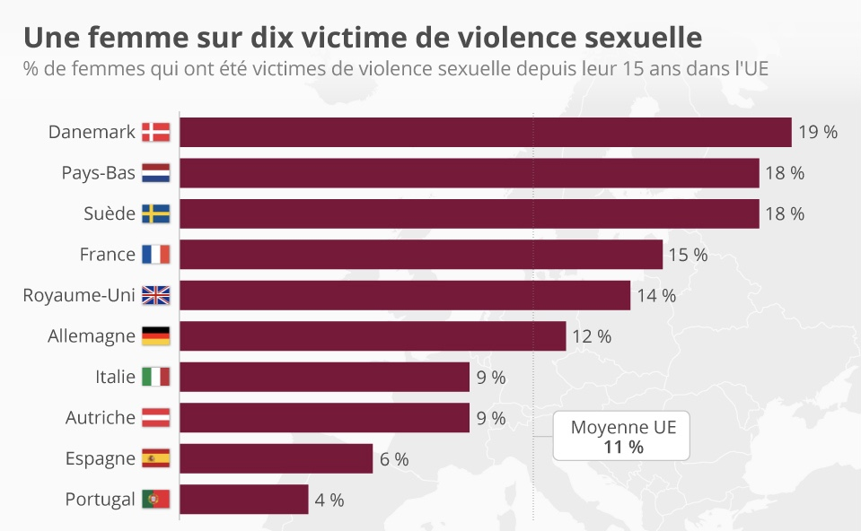

Quelques statistiques
- 1 fille sur 8 est victime d’agressions sexuelles
- 5% d’hommes dont 70% en tant que mineurs
- 16% de femmes dont 60% en tant que mineures
- 75000 femmes violées par an en plus des mineurs
- Moins 8% de d’entre elles portent plainte
- 1 à 2% de condamnation
- 24% après un psycho- traumatisme
- 80% de risque de développer un état de stress post-traumatique après un viol
Les violences sexuelles à l’international
